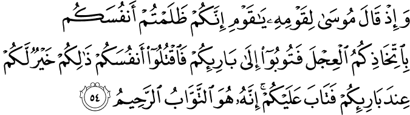

অনেকে মনে করেন, ইসলাম হচ্ছে নবী মুহাম্মাদ عليه السلام প্রচারিত একটি নতুন ধর্ম। এটি একটি ভুল ধারণা। ইব্রাহিম, ইয়াকুব, মুসা, ঈসা, মুহাম্মাদ (আল্লাহ تعالى তাদের সবার উপরে শান্তি দিন) — সকল নবীই একই ধর্ম প্রচার করে গেছেন: ইসলাম।[৬] ইসলাম শব্দের অর্থ: আল্লাহর تعالى ইচ্ছার কাছে নিজেকে পুরোপুরি সমর্পণ করা। আজকের যুগের মুসলিমদের মতো বনি ইসরাইলিদেরকেও নবী মুসা عليه السلام-এর মাধ্যমে আল্লাহ تعالى সম্পূর্ণ ধর্মীয় বিধান বা শারি‘আহ দিয়েছিলেন। বনি ইসরাইলিরা ছিল সেই যুগের মুসলিম—
{kind=link}
মনে করে দেখো, যখন আমি মুসাকে কিতাব দিয়েছিলাম—যা এক সত্য-মিথ্যার পার্থক্যকারী—যাতে করে তোমরা সঠিক পথে চলতে পারো। [বাকারাহ ৫৩]
আল্লাহ تعالى বনি ইসরাইলকে নবী মুসা عليه السلام এর মাধ্যমে সম্পূর্ণ শারি‘আহ দিয়েছিলেন, যেন তারা সঠিকভাবে সমাজ, অর্থনীতি, রাজনীতি ইত্যাদি পরিচালনা করতে পারে। এই আয়াতের শেষে تَهْتَدُونَ ব্যবহার করা হয়েছে, যার অর্থ সাধারণত করা হয়, “সঠিক পথ পাও।” কিন্তু এটি এসেছে اهتدى থেকে, যার অর্থ হচ্ছে: দেখানো সঠিক পথে চলার জন্য নিজে থেকে আন্তরিক চেষ্টা করা।[৮] এখানে একটি খুব সূক্ষ্ম ভাষাগত পার্থক্য আছে। আল্লাহ تعالى মানুষকে সঠিক পথে তাদের ইচ্ছার বিরুদ্ধে ঘাড় ধরে দাঁড় করিয়ে রাখেন না, বরং তিনি মানুষকে সঠিক পথ কোনটা সেটা দেখিয়ে দেন, তারপর মানুষের কাজ হচ্ছে সেই সঠিক পথে চলার চেষ্টা করা। মানুষকে সেই চেষ্টাটা করতে হবে, চেষ্টা ছাড়া কেউ সঠিক পথ পাবে না এবং চেষ্টা ছাড়া কেউ সঠিক পথে টিকেও থাকতে পারবে না।[১] যারা ফিলসফিকাল তর্ক দেখায়, “আল্লাহ যদি চাইতেন, তাহলে তো আমি সবসময় ভালোই থাকতাম। তিনি চাননি দেখেই তো আমি ভালো থাকতে পারিনি…”—তাদেরকে اهتدى এর মানে ঠিকভাবে বুঝতে হবে।
{kind=link}
একটা উদাহরণ দেই—
আপনি ঢাকা-চট্টগ্রাম মহাসড়কে গাড়ি চালিয়ে যাচ্ছেন, একসময় একটা চৌরাস্তা মোড়ে গিয়ে একটা সাইন বোর্ড দেখলেন: “চট্টগ্রাম ৫০ মাইল”, কিন্তু আপনি সেদিকে না গিয়ে দূরে একটা সিনেমা হল দেখা যাচ্ছে, সেদিকে যাওয়া শুরু করলেন। সড়ক ও জনপথ অধিদপ্তর ঠিকই আপনাকে সঠিক পথ দেখিয়েছিল, কিন্তু আপনি اهتدى (সঠিক পথে চলার চেষ্টা) করেননি।
আরেকটি উল্লেখযোগ্য ব্যাপার হলো: এই আয়াতে আল্লাহ تعالى ঠিক ‘শারি‘আহ’ শব্দটি ব্যবহার করেননি, বরং তিনি আল-কিতাব ব্যবহার করেছেন। কু’রআনে কিছু আয়াতে আল্লাহর تعالى আইনের এই প্রধান উৎসকে আল-কিতাব বলা হয়েছে,[১] যা লাওহে মাহফুযে সংরক্ষিত। -এই মূল উৎস থেকে তিনি বিভিন্ন যুগে, বিভিন্ন ঐশী গ্রন্থের মাধ্যমে, যুগের প্রয়োজনের পরিপ্রেক্ষিতে ধাপে ধাপে প্রকাশ করেছেন এবং কু’রআন হচ্ছে আল-কিতাবের সর্বশেষ সংকলন। এছাড়াও, কিতাব মানে শুধুই বই নয়, বরং যার উপর কিছু লেখা আছে, তাকেই কিতাব বলা হয়। নবী মুসাকে عليه السلام আল্লাহ تعالى কিছু পাথরের ফলকের উপর শারি‘আহর কিছু মূলনীতি লিখে দিয়েছিলেন। সেই পাথরের ফলকগুলোকে হয়তো এই আয়াতে আল-কিতাব বলে সম্বোধন করা হয়েছে।[৩]
এই আয়াতে আল্লাহ تعالى বলেছেন, তিনি মুসাকে عليه السلام আল-ফুরকান ٱلْفُرْقَان দিয়েছেন। কু’রআনকেও আল-ফুরকান বলা হয়েছে। ফুরকান এসেছে فرق ফারাকা থেকে, যার অর্থ: দুটো জিনিসকে আলাদা করা, যেন পরিষ্কারভাবে বোঝা যায় যে, সেগুলো দুটো ভিন্ন জিনিস। ফুরকান হচ্ছে মানদণ্ড, যা ব্যবহার করে সত্যকে মিথ্যা থেকে পরিস্কারভাবে আলাদা করা যায়।[১২] ফুরকানে কোনো সন্দেহ বা ভ্রান্তি নেই।[১] কিছু ‘মুসলিম’ দাবি করে যে, কু’রআনে শারি‘আহ-এর এমন অনেক ব্যাপার রয়েছে, যা ঠিক ভাবে বোঝা যায় না, এবং সেগুলোকে ঠিকভাবে বোঝার জন্য বিভিন্ন ধরনের আনুষঙ্গিক ধর্মীয় উৎস দরকার। যেমন, অনেকে বলে:
“অ্যালকোহল আসলেই হারাম কিনা: এটা ঠিক পরিস্কার করে বলা নেই বরং বলা আছে অ্যালকোহলে কিছু কল্যাণ আছে।”
“বিদেশে ফার্মের মুরগিকে যেভাবে মাথায় গুলি করে হত্যা করে তারপর জবাই করা হয়, সেটা যে হালাল পদ্ধতি না, সেটা তো কোথাও পরিস্কার করে বলা দেখলাম না; ম্যাকডোনাল্ডস, কে-এফ-সির চিকেন বার্গারগুলো আসলে হালাল।”
“মেয়েদের চুল ঢাকতে হবে কিনা, সেটা কু’রআনে বলা নেই। বলা আছে মাথা-বুক ঢাকতে, পিঠের উপর চুল বের হয়ে থাকলে সমস্যা নেই।”
“কু’রআনে ব্যভিচার ‘করতে’ মানা করা আছে, ‘দেখতে’ তো মানা নেই। পর্ণ যে দেখা যাবে না, সেটা কু’রআনে কোথায় লেখা আছে?”
ইত্যাদি। ইত্যাদি।
আল্লাহ تعالى স্পষ্টভাবে বলে দিয়েছেন: কু’রআন হচ্ছে আল-ফুরকান: কোনটা হালাল, কোনটা হারাম; কোনটা সত্য, কোনটা মিথ্যা—সেটা কু’রআনে পরিষ্কার করে বলা আছে। ১৪০০ বছর আগের প্রাচীন আরবি সঠিকভাবে জেনে, প্রতিটি আরবি শব্দের গভীরতা ঠিকভাবে বুঝে, কোনো একটি বিষয়ের উপর সংশ্লিষ্ট যত আয়াত রয়েছে কু’রআনে, সেগুলোর সবগুলো তাদের ইতিহাস এবং প্রেক্ষাপট অনুসারে যাচাই করে সিদ্ধান্ত নিলেই হালাল-হারাম পরিষ্কার হয়ে যায়। একই কথা আল্লাহ تعالى কু’রআনে আরেক জায়গায় বলেছেন—
বিশ্বাসীরা: তোমরা যদি আল্লাহর প্রতি সচেতন থাকো, তাহলে তিনি তোমাদেরকে সত্য মিথ্যা পার্থক্যকারী (ফুরকান) দিবেন, এবং তিনি তোমাদের পাপকে নিশ্চিহ্ন করে দিবেন এবং তোমাদেরকে ক্ষমা করবেন। আল্লাহর উদারতা অসীম। [আল-আনফাল ২৯]
আল্লাহ تعالى বনি ইসরাইলিদেরকে ফিরাউনের হাত থেকে অলৌকিকভাবে রক্ষা করেছিলেন, তিনি তাদের জন্য সমুদ্রের পানি দুইভাগ করে দিয়েছিলেন, যেন তারা ফিরাউনের হাত থেকে নিরাপদে সরে যেতে পারে। তারপর তিনি ফিরাউনকে বনি ইসরাইলিদের চোখের সামনেই পানিতে ডুবিয়ে দিলেন, যেন ফিরাউনের মৃত্যু নিয়ে তাদের কোনো ধরনের সন্দেহ না থাকে। এত কিছুর পরেও যে-ই নবী মুসা عليه السلام চল্লিশ রাতের জন্য চলে গেলেন আল্লাহর تعالى কাছ থেকে শারি‘আহ নিয়ে আসতে, তখন একদল বনি ইসরাইল একটা বাছুরের মূর্তিকে পুজা করা শুরু করে দিল। মুসা عليه السلام ফেরত এসে যখন এই কথা শুনলেন, তিনি অত্যন্ত রেগে গেলেন—

যখন মুসা তার লোকদেরকে বলেছিল, “হে আমার লোকেরা! তোমরা এই বাছুরটিকে পূজা করে নিজেদের উপরে এক চরম অন্যায় করেছ। এখন তোমাদের স্রষ্টার কাছে মাফ চাও। এটাই তোমাদের স্রষ্টার দৃষ্টিতে ভালো যে, তোমাদের মধ্যে যারা এই অন্যায় করেছে, তাদেরকে হত্যা করো।” এরপরও তিনি তোমাদের ক্ষমা প্রার্থনা গ্রহণ করেছিলেন—তিনি বারবার ক্ষমা করেন, তিনি নিরন্তর দয়ালু। [বাকারাহ ৫৪]
মুসা عليه السلام বনি ইসরাইলিদেরকে প্রথমে আল্লাহর تعالى কাছে তাওবাহ করতে বললেন। তাওবাহ-এর অর্থ সাধারণত করা হয় ‘ক্ষমা চাওয়া’ কিন্তু তাওবাহ অর্থ ঠিক ‘ক্ষমা চাওয়া’ নয়। তাওবাহ এসেছে توب থেকে যার অর্থ: ফিরে আসা। আমরা যদি শুধু মুখে বলি, “আল্লাহ, আমি ভুল করেছি, আমাকে ক্ষমা করে দিন”—তাহলে সেটা তাওবাহ হলো না। তাওবাহ হচ্ছে: ১) যেই ভুল কাজটা করছিলাম সেটা করা বন্ধ করা, ২) অন্যের সাথে অন্যায় করলে তার প্রায়শ্চিত্ত করা বা তাদের কাছে ক্ষমা চাওয়া, ৩) একই সাথে আল্লাহর تعالى কাছে ভুল করার জন্য ক্ষমা চাওয়া এবং ৪) সেই ভুল ভবিষ্যতে আর না করার জন্য প্রতিজ্ঞা করা।[৫] তাহলেই সেটা তাওবাহ হবে।
এই আয়াতে শারি‘আহ-এর বহুল ‘বিতর্কিত’ একটি দিক নিয়ে বলা হয়েছে— যারা ইসলাম ছেড়ে দিয়ে অন্য স্রষ্টার পূজা করা শুরু করে বা নাস্তিক হয়ে যায় এবং মানুষকে আল্লাহর আনুগত্য থেকে দূরে নিয়ে যায়—যারা মুরতাদ: তাদেরকে হত্যা করতে হবে। এনিয়ে ‘আধুনিক মুসলিম’ এবং অমুসলিম ক্রিটিকরা অনেক উচ্চবাচ্য করেছে যে, “ইসলাম হচ্ছে এক মধ্যযুগীয় বর্বর ধর্ম”, “মুসলিম হওয়ার আগে একশ বার চিন্তা করো, কারণ মুসলিম হওয়ার পরে যদি আর ইসলাম পছন্দ না হয়, তাহলে তোমার জীবন শেষ”, “ইসলামে কোনো ব্যক্তি স্বাধীনতা নেই, স্বাধীনভাবে চিন্তা করার সুযোগ নেই” ইত্যাদি।
প্রথমত, যারা ধর্ম ছেড়ে দিয়ে অন্য ধর্ম অনুসরণ করা শুরু করে, তাদেরকে হত্যা করার নির্দেশ কু’রআন দেয়নি, বরং সেটি তাওরাতে বলা হয়েছিল। কু’রআনে কোথাও সরাসরি এই নির্দেশ আসেনি, শুধু এই আয়াতের মধ্যে পরোক্ষভাবে তাওরাতের সেই নির্দেশকে একটি ‘বিশেষ পরিস্থিতিতে’ সমর্থন করা হয়েছে। সুতরাং বর্বর ধর্ম যদি বলতেই হয়, তাহলে তাওরাত গ্রন্থকে এবং ইহুদি, খ্রিস্টান ধর্মকে আগে বর্বর বলতে হবে। মজার ব্যাপার হচ্ছে, যে সব ইহুদি, খ্রিস্টান স্কলার ইসলামের পিছনে উঠে পড়ে লেগেছে: একে একটি বর্বর ধর্ম হিসেবে প্রচার করার জন্য, তারা আগে নিজেদের ধর্মের বইগুলো পড়লেই দেখতে পেত যে, তাদেরই ধর্মীয় বইয়ে এই নির্দেশ দেওয়া আছে—
“If your very own brother, or your son or daughter, or the wife you love, or your closest friend secretly entices you, saying, “Let us go and worship other gods” (gods that neither you nor your fathers have known, gods of the peoples around you, whether near or far, from one end of the land to the other), do not yield to him or listen to him. Show him no pity. Do not spare him or shield him. You must certainly put him to death. Your hand must be the first in putting him to death, and then the hands of all the people. Stone him to death, because he tried to turn you away from the LORD your God, who brought you out of Egypt, out of the land of slavery. Then all Israel will hear and be afraid, and no one among you will do such an evil thing again.” [Deuteronomy 13:6-11]
দ্বিতীয়ত, কখন এই হত্যা করার নির্দেশ কার্যকর করা যাবে, সেটা ঠিকভাবে না বুঝেই অনেক মুসলিম এই নিয়ে উল্টোপাল্টা কথা বলে ইসলামের ব্যাপক বদনাম করে গেছে। আমাদেরকে প্রথমে বুঝতে হবে: কোন প্রেক্ষাপটে আল্লাহ تعالى এই নির্দেশ দিয়েছিলেন?
আল্লাহ تعالى বনী ইসরাইলিদেরকে ইতিহাসের জঘন্যতম অত্যাচার থেকে অলৌকিকভাবে বাঁচিয়েছিলেন। তাদেরকে তিনি একজন নবী عليه السلام পাঠিয়েছিলেন, যিনি তাদের চোখের সামনে লাঠিকে সাপ করে ফেলা, ফিরাউনের জাদুকরদেরকে পরাজিত করা, নীল নদের পানি রক্তাক্ত করে দেওয়া, সমুদ্র দুই ভাগ করে ফেলা সহ কত অবিশ্বাস্য ঘটনা দেখিয়েছিলেন। পৃথিবীতে যদি কারও আল্লাহর تعالى প্রতি, এবং তার পাঠানো নবীর عليه السلام প্রতি অটুট বিশ্বাস থাকে, তাহলে সেটা থাকার কথা বনী ইসরাইলিদের।
কিন্তু এত কিছুর পরেও তারা আল্লাহর تعالى উপর বিশ্বাস হারিয়ে ফেলে একটা ফালতু বাছুরের মূর্তির কারসাজি দেখে, তাকে দৈব কিছু ভেবে তার পূজা করা শুরু করে দিয়েছিল। এত বড় অন্যায়ের শাস্তি হিসেবে মুসা عليه السلام তাদেরকে বলেছিলেন যে, তাদের মধ্যে যারা এই অন্যায় করেছে, তাদেরকে মেরে ফেলতে।[১][৩][৪] নিজেদের চোখে এত অলৌকিক ঘটনা দেখার পরেও যাদের বোধোদয় হয় না, সশরীরে একজন নবীকে عليه السلام পাওয়ার পরেও যারা তাকে ঠিকভাবে মেনে নিতে পারে না: তাদের আর কোনো আশা নেই। এধরনের মানুষদেরকে বাঁচিয়ে রাখলে তারা সমাজে দুর্নীতি ছড়াবে, মানুষকে বিভ্রান্ত করে দিবে, ধর্মীয় শিক্ষাকে কলুষিত করে দিবে, মানুষের মনের মধ্যে সন্দেহের বীজ বুনে দিবে। কিছু মানুষ আছে যারা সংশোধনের ঊর্ধ্বে। এরা একধরনের বিকৃত মানসিকতার অধিকারী। অলৌকিক ঘটনা নিজের চোখে দেখেও এদের বোধোদয় হয় না। এদেরকে নির্মূল করে ফেলাটা মুসলিম জাতির বৃহত্তর কল্যাণের জন্য জরুরি।[৭]
তবে লক্ষ্য রাখতে হবে, কখন এই কঠিন শাস্তিটি প্রয়োগ করা বৈধ। প্রথমত, কেউ যদি ঘোষণা দেয়: সে আজকে থেকে আর ইসলাম মানবে না, তাহলে সাথে সাথে তার উপর দা-কুড়াল নিয়ে ঝাঁপিয়ে পড়লে হবে না। এটা করা যাবে শুধু তাদেরই উপরে, যারা অন্য ধর্ম অনুসরণ করেই ক্ষান্ত দেয় না, একই সাথে ইসলামের বিরুদ্ধে মানুষকে উল্টো পাল্টা কথা বলতে থাকে এবং ইসলামিক রাষ্ট্রের বিরুদ্ধে গোপনে বা প্রকাশ্যে কাজ করতে থাকে বা দলবল নিয়ে মুসলিমদেরকে আক্রমণ করে।[৯] ইসলাম সমর্থিত সঠিক পদ্ধতি হচ্ছে: প্রথমে তাকে যথেষ্ট বোঝাতে হবে, ইসলামের বাণী সম্পর্কে তার ভুল ধারণাগুলোকে সংশোধন করার চেষ্টা করতে হবে। এতেও যদি না হয়, তাকে ইসলামিক আদালতে হাজির করে সাবধান করতে হবে যে, সে যদি তার অবস্থান পরিবর্তন না করে, তাহলে তাকে তিনদিনের নোটিশ দেওয়া হলো পুনরায় বিবেচনা করার জন্য। এরপরেও সে যদি নিজেকে না বদলায়, তার অন্যায় কাজগুলো করতেই থাকে, তাহলে তাকে ইসলামিক আদালতের নির্দেশ অনুসারে ইসলামিক সরকারের আয়োজনে হত্যা করতে হবে।[৯]
এখন অনেকে বলেন: তিনদিন সময় দেওয়ার পরে কেউ যদি সিদ্ধান্ত নেয় যে, সে গোপনে অন্য ধর্ম অনুসরণ করবে, কিন্তু মানুষের কাছে নিজেকে মুসলিম বলে জাহির করবে, তাহলে কি আমরা মুনাফিক তৈরি করব না? হতে পারে। সেক্ষেত্রে আল্লাহ تعالى তাদের বিচার করবেন। মুনাফিকরা থাকবে জাহান্নামের সবচেয়ে নিচের, সবচেয়ে ভয়ঙ্কর স্তরে, এমনকি কাফিরদের থেকেও অনেক বেশি কষ্টের মধ্যে। তাদেরকে নিয়ে আমাদের আর মাথা না ঘামালেও চলবে। যতক্ষণ সে মুরতাদ হয়ে সমাজে বিভ্রান্তি, দুর্নীতি না ছড়াচ্ছে, তাদেরকে হত্যা করার অধিকার ইসলাম দেয়নি।
একটু চিন্তা করলেই বোঝা যায় যে, একজন ধর্মদ্রোহী বা মুরতাদকে হত্যা করার সিদ্ধান্ত কখনও কোনো ব্যক্তি বা দল নিজে থেকে নিতে পারে না এবং মুরতাদকে হত্যা করা তখনি সম্ভব যখন দেশে ইসলামের আইন রয়েছে, যখন ইসলামিক আদালতে মুরতাদকে হাজির করে তাকে সাবধান করে তিন দিনের নোটিশ দেওয়া যায়।[৯] যেমন, আপনার প্রতিবেশী চৌধুরী সাহেব এসে আপনাকে বলল, “ভাই, আমি অনেক বাইবেল পড়লাম। আমি মনে করি খ্রিস্টান ধর্ম ইসলাম থেকে অনেক ভালো। আমি যিশুর প্রেমে পড়ে গেছি, আমার হৃদয়ে এখন শুধুই যিশু। আমি চললাম খ্রিস্টান হতে, যিশুর কাছে নিজেকে সমর্পণ করতে।” এখন আপনি যদি তাকে বলেন, “চৌধুরী সাহেব, তিন দিন সময় দিলাম। ভালো হয়ে যান। না হলে কিন্তু…” তখন চৌধুরী সাহেব গিয়ে আপনার নামে থানায় জিডি করে রাখবে এবং আপনি তার সাথে কিছু করলে সোজা জেলে যাবেন, এমনকি আপনার ফাঁসিও হতে পারে। আর এই কাজটা করতে হবে আপনাকে কু’রআনেরই অনেকগুলো আয়াত ভেঙে, যেখানে আল্লাহ تعالى পরিষ্কার করে বলে দিয়েছেন: যারা নিজেদের মতো ধর্ম মেনে চলতে চায়, সমাজে কোনো বিশৃঙ্খলা না করে, ইসলামিক সরকারের বিরুদ্ধে কিছু না করে, তাদের সাথে জোরাজোরি করা যাবে না—ইসলামে কোনো জোর-জবরদস্তি নেই। [দেখুন: বাকারাহ ২:২৫৬, আল-মায়িদাহ ৫:৩২, ৫:৯২, আলে-ইমরান ৩:২০, আশ শুরা ৪২:৪৮, ইউনুস ১০:৯৯]
{kind=link}
ধর্মের ব্যাপারে কোনো জবরদস্তি নেই। সত্য পথ মিথ্যা থেকে স্পষ্ট হয়ে গেছে।… [বাকারাহ ২:২৫৬]

খুনের প্রতিশোধ বা সমাজে চরম দুর্নীতি-ক্ষয়ক্ষতি-বিশৃঙ্খলা ছড়ানোর প্রতিফল ছাড়া অন্য কোনো কারণে কেউ যদি একজনকেও হত্যা করে, তাহলে সে যেন মানবজাতির সবাইকে হত্যা করল। [আল-মায়িদাহ ৫:৩২]
{kind=link}
যদি তোমার প্রভু চাইতেন, তাহলে পৃথিবীতে সবাই অবশ্যই বিশ্বাস করত। তাহলে তুমি কি মানুষকে জোর জবরদস্তি করবে বিশ্বাস না করা পর্যন্ত? [ইউনুস ১০:৯৯]
মুরতাদ বা ধর্মদ্রোহীদের বিরুদ্ধে জিহাদ করার জন্য যারা রঙিন স্বপ্ন দেখছেন, এই আয়াতগুলো পড়ার পর তাদের একশ বার ভেবে দেখা উচিত: তারা যেটা করতে যাচ্ছেন, সেটা সত্যিই নিশ্চিতভাবে জিহাদ, নাকি সারা মানবজাতিকে হত্যা করার একটা উদ্যোগ। যদি ধরুন কোনোভাবে হিসেবে ভুল হলো, এবং এমন কাউকে হত্যা করা হলো, যাকে হত্যা করার অধিকার আল্লাহ تعالى দেননি। তাহলে কী ভয়াবহ ফলাফল হবে তা ঠিকভাবে ভেবে দেখেছেন?
এখন আপনি যদি মনে করেন: আপনারা কয়েকজন যুবক মিলে একসাথে হয়ে একটা “মুরতাদ নির্মূল কমিটি” করবেন, তারপর চৌধুরী সাহেব টাইপের মুরতাদদেরকে কমিটির পক্ষ থেকে হুমকি দিবেন, এবং তারপর সে না শুনলে কয়েকজন মিলে গিয়ে হত্যা করবেন; তাহলে হুমকি দেওয়ার পরের দিন আইন-শৃঙ্খলা বাহিনী এসে আপনাদেরকে ধরে নিয়ে যাবে। তাছাড়া এই কাজটা করতে হবে আপনাদেরকে কু’রআনের অন্যান্য আয়াতের আদেশ ভেঙে এবং একই সাথে দেশের আইন ভেঙে। একজন মুসলিমের জন্য দেশের আইন মেনে চলা আবশ্যক, যদি তা কুরআনের পরিপন্থি না হয়।[১০] কোনো দেশের আইন ভাঙা, সেই দেশের সাথে করা অঙ্গীকার ভঙ্গ করার শামিল। যতক্ষণ পর্যন্ত দেশের আইন আপনাকে বাধ্য না করছে ইসলামের আইনের বিরুদ্ধে কিছু করতে, ততক্ষণ পর্যন্ত আপনি দেশের আইন ভাঙতে পারবেন না।[১০]
যারা মুরতাদকে হত্যা করা সমর্থন করে, তারা আসলে কু’রআনের একটি-দুটি আয়াতকে তাদের প্রেক্ষাপট ছাড়া বিবেচনা করে সিদ্ধান্তে চলে যায়। কেউ যদি মুরতাদ সম্পর্কিত কু’রআনের সবগুলো আয়াত, তাদের প্রেক্ষাপট অনুসারে ঠিকভাবে বিবেচনা করে, তাহলে তারা দেখবে যে, মুরতাদকে হত্যা করার জন্য প্রথমে একটি ইসলামিক আইন-ব্যবস্থা দরকার, একটি ইসলামিক সরকার দরকার এবং এইধরনের কোনো কাজ, কোনো ব্যক্তি বা দল নিজেরাই সিদ্ধান্ত নিয়ে করতে পারে না। মুরতাদকে হত্যা করার রায় দেওয়া শুধু মাত্র একটি ইসলামিক আদালতের পক্ষেই সম্ভব।
- [১] নওমান আলি খানের সূরা বাকারাহ এর উপর লেকচার।
- [২] ম্যাসেজ অফ দা কু’রআন — মুহাম্মাদ আসাদ।
- [৩] তাফহিমুল কু’রআন — মাওলানা মাওদুদি।
- [৪] মা’রিফুল কু’রআন — মুফতি শাফি উসমানী।
- [৫] মুহাম্মাদ মোহার আলি — A Word for Word Meaning of The Quran
- [৬] সৈয়দ কুতব — In the Shade of the Quran
- [৭] তাদাব্বুরে কু’রআন – আমিন আহসান ইসলাহি।
- [৮] ইহতাদা শব্দের বিস্তারিত অর্থ: http://ejtaal.net/aa/br/10/br-1007.png
- [৯] মুরতাদের শাস্তি: ডঃ মুহাম্মাদ সালাহ এর উত্তর – http://www.youtube.com/watch?v=RYTETfVWr3k, ডঃ জাকির নায়েকের আলোচনা – http://www.youtube.com/watch?v=IDE0z42wpr4, কিছু বিস্তারিত আলোচনা – http://islamqa.info/en/811, http://www.islamqa.com/en/14231, http://www.onislam.net/english/ask-the-scholar/crimes-and-penalties/apostasy/172501-should-an-apostate-be-put-to-death.html
- [১০] দেশের আইন ভাঙ্গা সম্পর্কে শারি‘আহ-এর অবস্থান: http://spa.qibla.com/issue_view.asp?HD=10&ID=2409&CATE=144
- [১২] ফুরকান শব্দের বিস্তারিত অর্থ — http://ejtaal.net/aa/br/7/br-0731.png
{kind=link}
{kind=link}